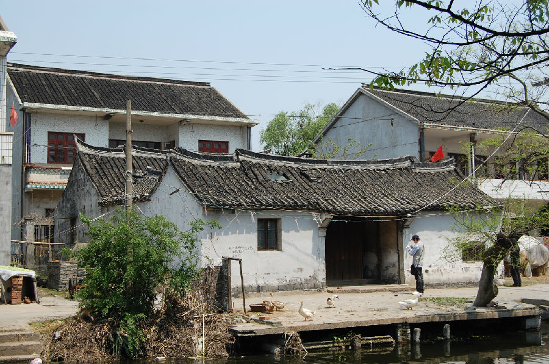
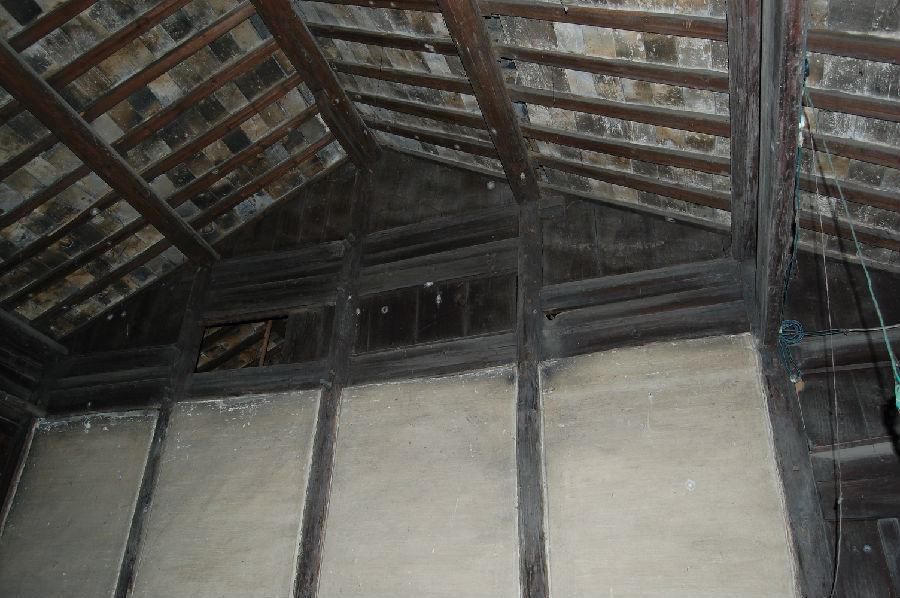

嘉兴市文物保护网 · 市级文物保护点 · 2020-11-06 · 原文


横港张镜荣老宅位于嘉兴市秀洲区王江泾镇红联村5组，据住户介绍该建筑为民国所建。坐北朝南，木梁架结构，呈四合式建筑，原为三进，现存二进穿枋式五檩平房，总占地面积约169平方米，第一进中为门道、两侧为次间，中为天井，地面用小青砖铺设，两侧各有厢房（东侧一间已拆除做鸡舍）；第二进为三开间。该宅门罩等处局部雕刻，屋顶为硬山顶，两端翘脊，用料一般。该宅具有江南民居特色，虽然保存情况不好，但仍具一定的历史价值。2010年公布为嘉兴市文物保护点。